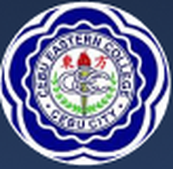
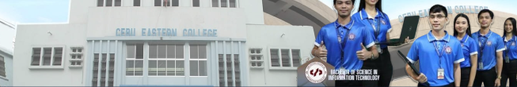

LEON KILAT ST., CEBU CITY
Welcome to Cebu Eastern College 1915, a community built on a proud heritage of education, character, and service. For generations, we have remained committed to nurturing learners through quality education, meaningful experiences, and values that extend beyond the classroom.
As we honor our rich history, we continue to look toward the future—with innovation, purpose, and a deep commitment to developing confident, compassionate, and capable individuals.
Discover our story. Experience our community. Be part of our continuing legacy.
Cebu Eastern College 1915, Inspiring minds, shaping character, building the future.
